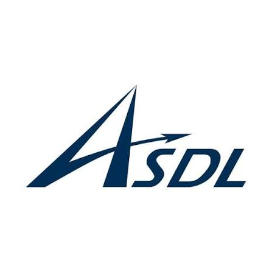
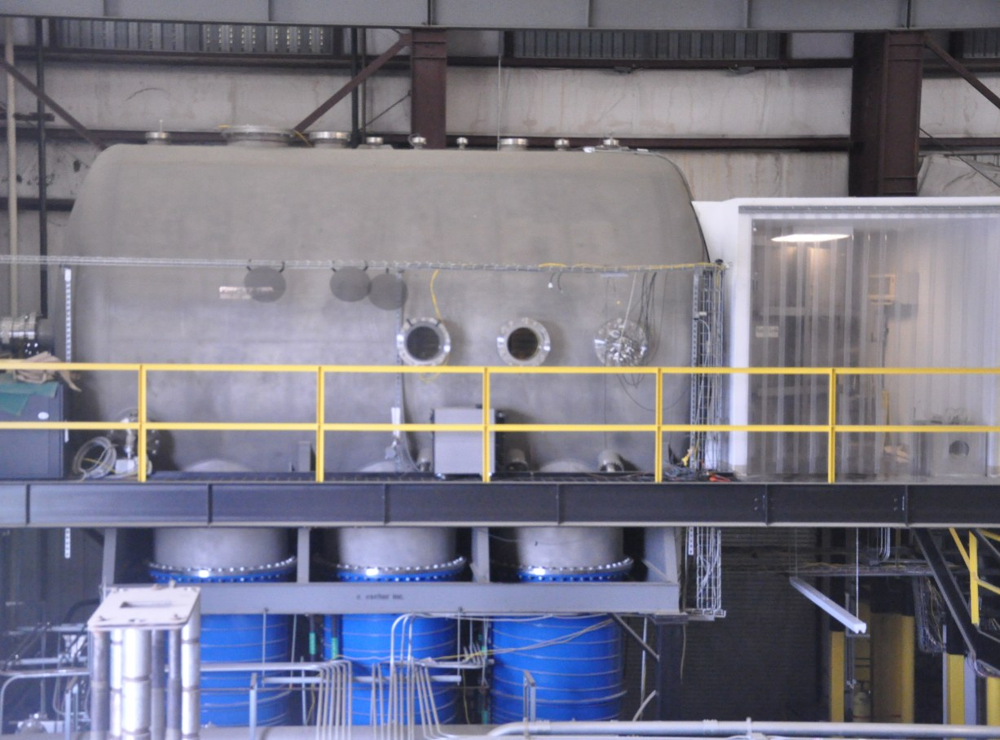
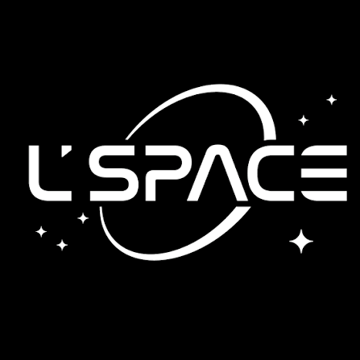

I'm an aerospace engineering student at Georgia Tech (GPA 3.38; HOPE Scholarship; Dean's List)
with experience in NASA Human Landing System lunar navigation simulation, cryogenic rocket-engine test operations,
and model-based systems engineering. My coursework includes control systems, jet and rocket propulsion,
spacecraft flight dynamics, and spacecraft operations.
Supporting lunar Terrain Relative Navigation (TRN) testing at NASA Marshall Space Flight Center by integrating Unreal Engine camera imagery with a 6-DoF guidance, navigation, and control simulation. Incorporating lunar elevation and albedo maps, developing camera-model fidelity including radial lens distortion, and supporting Linux and parallel simulation for Monte Carlo comparisons of TRN algorithms.
May 2026 - August 2026
Undergraduate Research Assistant
ASDL, MBSE Branch

Developed SysML models in Cameo to define system structure, behavior, and requirements as part of the Aerospace Systems Design Laboratory's model-based systems engineering work. Integrated the Siemens NX parametric tool to support cross-domain trade studies.
July 2025 - December 2025
Cryogenic Test Operations
HPEPL, Georgia Tech

Regulated liquid nitrogen pressure, fill level, and venting to maintain cryogenic test chamber stability during overnight rocket-engine operations. Followed formal cryogenic test procedures and safety protocols, monitored real-time subsystem telemetry, and escalated off-nominal conditions to test campaign leads.
January 2026 - May 2026
Lead Systems Engineer
NASA L'SPACE MCA

Developed a preliminary mission concept in the 15-week Mission Concept Academy, following NASA mission life-cycle practices. Led systems engineering work, conducted subsystem trade studies, and developed spacecraft configurations using Siemens NX and planetary data analysis with JMARS.
August 2025 - Present
Proposal Writing & Evaluation
NASA L'SPACE NPWEE
Selected for NASA's national proposal development and evaluation academy sponsored by Marshall Space Flight Center. Co-authored an award-winning proposal selected for $10,000 in continuation funding, continued project development, and trained in evaluating proposals against NASA solicitation review criteria.
August 2025 - December 2025
Guidance, Navigation & Control
Ramblin' Rocket Club
GNCFLIGHT SOFTWARE • SIMULATION
Updated GNCSIM with a calibrated actuator model and validated closed-loop response against static-fire data. Implemented actuator modeling in flight software with deflection and rate limits, verifying hardware-in-the-loop and software-in-the-loop command tracking.